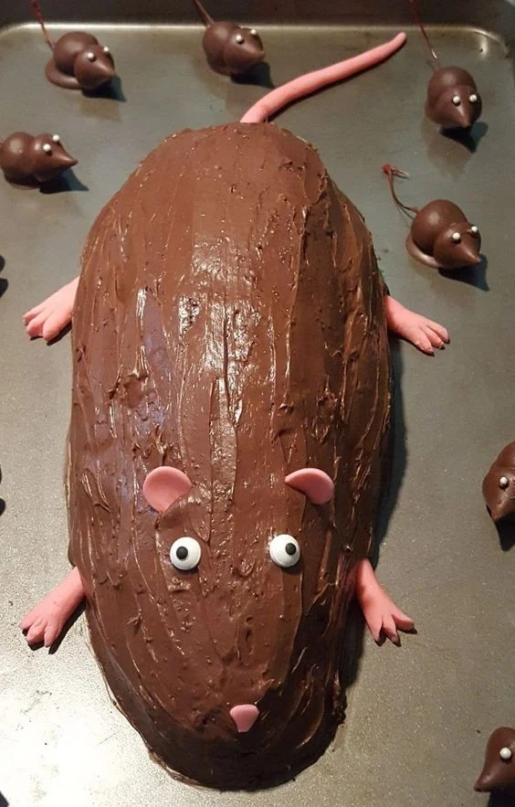

Somos uma confeitaria dedicada a
criar bolos deliciosos e personalizados e personalizados
para todas as ocasioes.
Nossa paixão pela confeitaria é refletida
em cada criação que sai da nossa cozinha
Massa fofinha de chocolate, recheio cremoso e uma cobertura que deixa cada pedaço ainda mais especial.
Massa leve com recheio de morango e um toque delicado de creme, perfeito para quem gosta de sabores frescos e suaves.
Massa macia, recheio cremoso de coco e aquele sabor caseiro que combina com qualquer momento
Massa de cenoura bem fofinha acompanhada de uma cobertura de chocolate cremosa. Simples, clássico e impossível de ignorar.